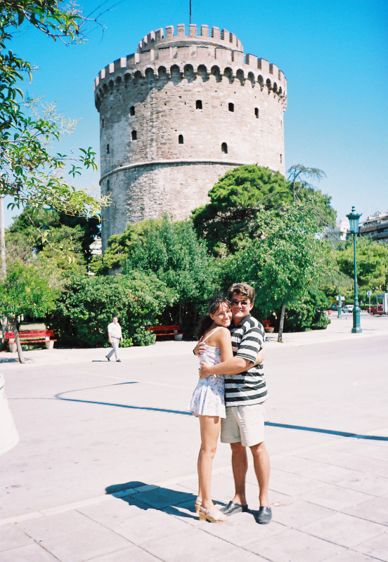

Sestrine razglednice i šlag na torti
Moja sestra je svetski putnik koji ide i van turističkih ruta. Bila je kod Kurda u Turskoj, išla kod Egipćana kući. Bila je u Iraku, Siriji. Uvek sam sa čežnjom gledala njene slike i slušala priče. Najslađe mi je bilo kad posetim destinaciju o kojoj mi je ona već pričala, kao što su Petra, Sevilja...
Tako mi je jednom davno pokazala razglednice Santorinija i samo mi je pala vilica. Kao da nije sa ovoga sveta, crno vulkansko tlo, odroni, neobične bele kuće sa plavim prozorima i krovovima. Izdaleka su mi izgledale kao šlag na torti. Treba razumeti da tada nije bilo interneta niti lakog pristupa informacijama i slikama. Tada sam prvi put videla Santorini i bila oduševljena.
.jpg "Fira")
Potraga za smeštajem i Duškov „nemirni“ brod
Par godina kasnije, sa svojim tadašnjim dečkom, a današnjim mužem, tragom oglasa, obrela sam se u Beogradu u turističkoj agenciji. Dadoše nam veliki prospekt, formata A4, debljine nekoliko cm, potpuno nestandardan, još na engleskom. Pokušajte tu da nađete. Nađosmo smeštaj, svi su bili preskupi osim tog jednog koji je čak izgledao sasvim dobro, ako vam ne smeta što su zidani kreveti i na njima dušek. Meni je to čak bilo šarmantno. Još smo imali i pogled na more sa klisure i videli preostali vrh vulkana koji je pomalo pućkao sumporna isparenja.
Tu imamo i priču kako je Duško usred noći video savršen odsjaj od meseca u moru kod centralnog ostrva pa se popeo na krov našeg smeštaja, smestio se pored plave kupole i kao lovac u čeki čekao da mu oblak zakloni sjajni mesec te da slika njegov odsjaj u moru bez direktnog svetla samog meseca.
.jpg "Fira")
Drugom prilikom mu je bio lep prizor, osvetljen jedrenjak koji je bio ukotvljen u luci. Jedrenjak kao iz priče o Petru Panu sav nakićen svetlećim lampionima. Spazili smo ga sa vrha terase odakle se organizovano posmatrao zalazak sunca uz klasičnu muziku (možda vam to zvuči malo kičerajski ali na taj događaj se dolazilo i više sati ranije radi rezervacije mesta). Upotrebljen je sav prateći foto pribor: mini tripod, sajla za okidanje (da ne bi rukom drmao aparat dok se drži duga ekspozicija) sve namešteno i iskadrirano... Kliiik! Ekspozicija od nekoliko sekundi i odosmo do fotoradnje da nam izvade poslednji snimak sa filma (u mračnoj komori iseku poslednji snimak i ostatak filma vrate u aparat da se može dalje slikati) te razviju izvađeni snimak (stara vremena, ne vidiš šta si slikao dok kod fotografa ne razviješ film i napraviš sliku), a ono na slici jedrenjak mutan, a sve oko njega oštro! Kako to kad je korišćen stativ? Posle se Duško setio da se brod ljuljuškao na blagim, za oko neprimetnim, talasima dok je blenda bila otvorena i to se po filmu razmazalo. Ništa od sjajnog kadra jedrenjaka u noći...
Solun: Hladna lubenica i penzionerski mir
Uglavnom nađemo mi taj povoljan smeštaj i hrabro se uputimo na taj put. Prvo vozom, spavaćim kolima, stižemo u Solun. Sve što znamo je da ima prevoz za Atinu svaki dan, ali ne znamo kada, nema interneta, je l'. Stižemo ujutru, a voz za Atinu je predveče, što i nije tako loše, stići ćemo da obiđemo i grad. Penzioneri igraju šah u parku, ljudi piju kafu i čitaju novine u kafiću, tako neka lepa atmosfera. Osim što je vruće i spas nalazimo u hladnim seckanim lubenicama za koje Duško kaže da deluju na njega kao infuzija. Prošetali smo uz more do kule. Sedeli u parku. I došlo je vreme za nastavak puta.

Atina: Izgubljeni u prevodu i prostoru
U Atinu stižemo oko 2 ujutru. Smeštaj, naravno, nemamo, kako rezervisati bez Bookinga. Zamolimo taksistu da nas odveze do nekog jeftinijeg smeštaja. Stižemo preumorni. Recepcioner gnjavi, mi padamo s nogu. Vidi on i kaže: Hajde ostavite vi pasoše, ja ću da popišem šta treba, vi se idite odmorite, odspavajte pa ujutru uzmite pasoše. Važi. Zahvalni se izvrćemo i u trenu zaspemo. Ujutru orni ustajemo da obiđemo Atinu i Akropolj. Izlazimo iz hotela, odemo metroom negde i setimo se da nismo uzeli pasoše. Nemamo pojma ime hotela. Ja za tri života ne bih znala da nađem hotel. Da odemo u miliciju i šta? Hoće oni zvati svaki hotel u Atini? Ja već očajna. Sreća da se Duško setio imena trga sa kog smo pošli. Takođe, kad smo se vratili, prepoznao je put i vratio nas do hotela. Kako sam bila srećna! Pasoši su tu, sreća, sreća, radost i možemo da nastavimo.
Akropolj nam je bio lep, kao i pogled na Atinu. Mi mladi, zaljubljeni, ne može nam biti lepše. Još se spremamo za ostrva. Noćna vožnja trajektom, nismo platili kabine, kao drugi mladi spavamo na palubi na prostirkama za jogu koje sam ponela. I lepo nam je. Tonem u san sa pogledom na zvezde, srećna.
.jpg "Atina")
.jpg "Atina")
Santorini: Kineski nesporazum i gradovi sa razglednice
Budimo se. Pokušavam da uslikam more kao što je na razglednici koju sam kupila kad sam bila na letovanju u Grčkoj sa roditeljima (puno godina kasnije uspeću da napravim takvu fotku). Stižemo u luku Santorinija. Sreća, turistička agencija je odmah tu..jpg "Fira")
Blaga trema, hoće li sve biti u redu. Ulazimo, a oni nikada čuli za nas. Tražimo prospekt da pokažemo smeštaj. Sreća pa nam daju telefon (nije bilo ni mobilnih, je l') da pozovemo našu agenciju. Nešto dugo se oni raspravljaju, ali nekako se dogovoriše i priznaše našu uplatu.
Taksi nas vozi do smeštaja. Gadnim serpentinama.
Mi smo mislili da smo u Firi, ali smo u Firostefaniju. Što nije važno jer su spojeni šetalištem, a mi smo na samom početku Firostefanija. Gradić je presladak, kućica nam je lepa, odmah pored crkve sa prepoznatljivom plavom kupolom, ali nema nikoga da nas dočeka. Šta ćemo sad?
.jpg "Santorini")
.jpg "Santorini")
Nije nam svejedno što ne možemo da uđemo u smeštaj, ali odlučimo da prošetamo Firom. Sviđa nam se. Ulice su vrlo neobične, uske, gore-dole, lavirint, sve okrečeno u belo, pukne pogled s visine na more. U vreme kada nismo imali mape na telefonima (niti same mobilne), pitali smo lokalce za pravac, a navigacija nam je bio sâm pogled na more.
.jpg)
.jpg)
.jpg)
.jpg)
.jpg "Fira")
.jpg "Fira")
.jpg "Fira")
.jpg "Fira")
.jpg "Fira")
.jpg "Fira")
.jpg "Fira")
.jpg "Fira")
.jpg "Fira")
Jednom prilikom su naišli i neki kosooki, gazde opet nema, pitaju da ostave ruksake. Ja sva bitna da demonstriram znanje japanskog, kad rekoše da su Kinezi. I am sorry. You should distinguish. Uh.
Vetrenjače, vulkanski mak i stampedo magaraca
Nekako i gazda dođe i sada je sve u redu. Imamo smeštaj. Iznajmili smo motorić. Vozili smo se sa njim i u Oju. Bilo je vruće i nije bilo nigde nikog na ulicama. Slikali smo se gde smo hteli bez čekanja i redova kojih sada ima. Uz vetrenjaču, kupolu, zvonik, bazen... Kuće su mi izgledale kao da su napravljene od lego kocaka.
.jpg "Fira")
.jpg "Fira")
.jpg "Fira")
.jpg "Fira")
.jpg "Fira")
Motorićem idemo dalje do plaže. Pored puta nailazimo na crno brdo gde su ostavljane poruke pisane belim kamenčićima. Uglavnom su ljubavne. I mi prikladno napravimo S+D i nastavimo dalje.
Usput vidim starog deku sa magarcem. Znam da bi se ta slika svidela mom tati. Kažem Dušku da zaustavi motor. Želim sliku i sa njim pa zaustavljam i drugog motoristu da nas slika. Deka se smeška a Duško ne može da veruje šta sam uradila.
.jpg "Fira")
Plaža je sa druge strane ostrva gde je sve ravno. Plaža je od sitnog crnog vulkanskog peska, koji mi je ličio na mak. More je, zbog tamne boje peska, tamno plavo.
.jpg "Plaža")
.jpg "Plaža")
Ostrvo je nekada izgledalo kao planina pošto je vulkan, i onda je on eruptirao i potonuo. Ostao je obod u obliku kroasana gde se na unutrašnjoj strani kroasana uzdižu odroni na kojima su karakteristične kućice. Na spoljnoj strani kroasana je sve normalno ravno.
Spuštali smo se onim strminama peške do luke kada smo išli na izlet na vulkansko ostrvo gde je još pomalo aktivan krater. Krenuli smo samouvereno peške, nizbrdo je, možemo mi to i nećemo da maltretiramo jadne magarce da ih jašemo po stepenicama. Međutim, nismo računali na njihov stampedo. Nije, izgleda, ni njihov pastir računao na nas pa nam je mahao rukama da se pribijemo uza zid. Bogami sam se uplašila da će me pregaziti magarci.
.jpg "Fira")
.jpg "Fira")
.jpg "Fira")
.jpg "Fira")
Izlet u srce vulkana: Hodanje po aktivnom krateru
Kupali smo se u narandžastoj vodi, čija je boja od sumpora koji izbija iz vulkana. Žuti kupaći se malo obojio u narandžasto.
.jpg "Fira")
Bio je neobičan, gotovo nadrealan doživljaj hodati po pravom pravcatom vulkanu. Oko nas se pružala samo stvrdnuta, oštra crna lava, oblikovana u čudne, dramatične reljefe koji su svedočili o nekadašnjoj erupciji. Dok smo koračali tim mračnim, pustim tlom usred mora, imala sam osećaj kao da smo sleteli na neku drugu planetu, a bele uličice i kućice sa razglednice su se videle u daljini i podsećale su me na šlag na torti.
Iz rupa je pućkalo sumporno isparenje koje smo pokušali uslikati, ali bez uspeha..jpg "Fira")
.jpg "Fira")
.jpg "Fira")
.jpg "Fira")
.jpg "Fira")
.jpg "Fira")
.jpg "Fira")
We put a little bit of blue in everything we do
Prvi film koji smo izradili i dobili slike mi je bio razočarenje. Slike su bile potpuno plave. Pri izlasku sam na foto-radnji videla prikladan slogan: We put a little bit of blue in everything we do.
Promenili smo foto-radnju, i do kraja letovanja smo koristili Kodak film i pravili su slike na Kodak papiru i bile su nam savršene toliko da kada smo došli kući i hteli da napravimo veće fotografije koje smo kačili kao slike na zidu, nisu mogli da ponove taj kvalitet jer niko nije imao takav Kodak Gold papir na kome su rađene originalne fotografije i koji je imao savršen kolorit.
Na trgu kod foto-radnje je bilo uličnih zabavljača. Zapamtila sam onog što je gutao vatru.
Upamtili smo i kako nam je jednom, dok smo šetali neverovatnom Ojom i gledali na plave kupole i more, do ušiju dopro Bregin instrumental iz filma Arizona dream. Momenat za pamćenje.
Voleli smo i zalaske sunca uz pogled na more sa visine i klasičnu muziku iz restorana.
.jpg "Fira")
.jpg "Fira")
.jpg "Fira")
Crvena plaža, grčka Pompeja i ukus čeri paradajza
Na Santoriniju smo tada prvi put u životu probali čeri paradajz, sitan, ali neverovatno sladak i pun ukusa zbog vulkanskog tla.
Posetili smo i čuvenu Crvenu plažu, koja je godinama kasnije delimično zatvorena za turiste zbog opasnosti od odrona nakon zemljotresa.
.jpg "Fira")
.jpg "Fira")
Poseban utisak na nas ostavile su iskopine Akrotiri. Šetajući Akrotirijem, bilo je neverovatno pomisliti da hodamo ulicama grada starog više od tri i po hiljade godina. Kuće na sprat koje su imale rešenu kanalizaciju, freske, ćupovi, predmeti iz svakodnevnog života... sve je ostalo sačuvano zahvaljujući vulkanskom pepelu nakon erupcije. Nije ni čudo što ga nazivaju grčkim Pompejima.
.jpg "Fira")
.jpg "Fira")
Pronašli su i alat, ali ne i ljude. Izgleda kao da je bilo manjih potresa i popravki pre velike erupcije, tako da su ljudi uspeli da se spasu.
Neki kažu i da je to bila Atlantida jer su bili izuzetno napredni (kritska tj. minojska kultura), a potonuli su.
Obišli smo i Ancient Thera, koja me posle Akropolja nije fascinirala.
Proveli smo desetak dana uživajući u kupanju i obilascima neverovatnih predela.
Tu sam prvi put plakala što napuštam neku destinaciju.
Delimičnu utehu je doneo dalji put na Mikonos.
Odlazak i uteha zvana Mikonos
Posle Santorinija smo išli brodom do Mikonosa. Kad smo već tu da vidimo i njega pri povratku kući.
Naišli smo na jednog od dva čuvena gej pelikana koji su maskote ostrva. Duško ga je hrabro mazio a ja sam ga dotakla na sekundu ali je on to uspeo da ovekoveči.
Plaži sa patkicama, tirkiznom vodom i belim peskom sam se obradovala. Tu su i vetrenjače u nizu, po kojima je poznat Mikonos, Mala Venecija, karakteristične ulice. Bili smo smešteni u nekim kućicama na plaži, gde obično dolaze gejevi. Nama je u to vreme to bilo šokantno, da tako otvoreno, javno pokazuju emocije.
.jpg "Mikonos")
.jpg "Mikonos")
.jpg "Mikonos")
.jpg "Mikonos")
.jpg "Mikonos")
.jpg "Mikonos")
.jpg "Mikonos")
.jpg "Mikonos")
.jpg "Mikonos")
Bilo je to jedno sasvim drugačije vreme, bez interneta i mobilnih, gde su se uspomene urezivale direktno u srce (i na filmsku traku), a svaka prepreka na putu pretvarala u priču koja se pamti celog života.
Često postavljana pitanja o putovanju na Santorini i Mikonos (FAQ)
Kada je najbolje vreme za posetu Santoriniju i Mikonosu?
Najbolje vreme za posetu je od maja do oktobra. Ako želite da izbegnete ogromne gužve i visoke cene, idealni meseci su maj, jun i septembar, kada je vreme savršeno za kupanje i istraživanje, a ostrva imaju mnogo mirniju atmosferu.
Kako stići sa Santorinija na Mikonos?
Najlakši i najbrži način je vožnja trajektom ili brzim katamaranom. Tokom sezone postoji nekoliko polazaka dnevno, a plovidba između ova dva ostrva traje između 2 i 3 sata, u zavisnosti od vrste broda koji odaberete.
Šta su iskopine Akrotiri i zašto ih vredi posetiti?
Akrotiri su drevni minojski grad na Santoriniju koji je pre više od 3.500 godina zatrpan vulkanskim pepelom nakon velike erupcije. Zbog izuzetno očuvanih višespratnih kuća, ulica i predmeta iz svakodnevnog života, Akrotiri se s pravom nazivaju grčkim Pompejima i predstavljaju nezaobilaznu istorijsku atrakciju.
Da li je vulkan na Santoriniju i dalje aktivan?
Da, vulkan je i dalje tehnički aktivan, ali je u stanju mirovanja. Glavni krater se nalazi na nenaseljenom ostrvu Nea Kameni u centru kaldere, gde se organizuju pešačke ture i izleti brodom, tokom kojih možete videti sumporna isparenja i kupati se u toplim izvorima.
Koja je razlika između Santorinija i Mikonosa?
Santorini je poznat po dramatičnim vulkanskim pejzažima, romantičnim zalascima sunca i istorijskim lokalitetima poput Akrotirija. Sa druge strane, Mikonos je prepoznatljiv po prelepim peščanim plažama, vetrenjačama, slikovitim belim uličicama (Mala Venecija) i dinamičnom noćnom životu.